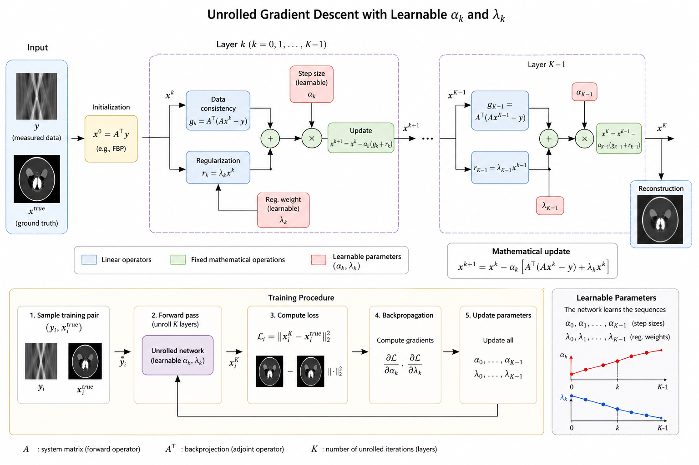
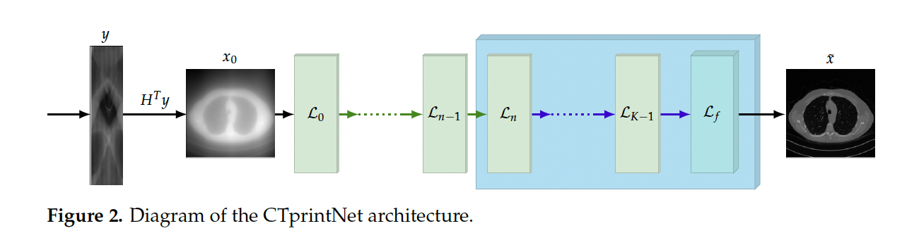
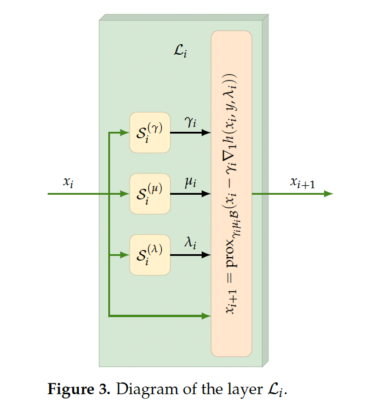

Hybrid methods: unrolling algorithms#
In simple terms, unrolling consists of transforming a traditional iterative optimization algorithm into a deep neural network, where each iteration corresponds to one layer of the network.
The idea: Learn to optimize!
Unrolling builds a trainable supervised network that mimics the optimization process but is:
much faster,
adapted to the specific data distribution,
capable of implicitly learning more powerful priors.
How unrolling works?
Example: Unrolling the gradient descent to solve \( min_x f(x)=\|Ax-y^{\delta}+ \lambda R(x)\) and learn the regularization parameter \(\lambda\). This is the simplest possible case where only a single parameter must be learned by the network.
At each iteration k, the gradient descent updates the solution as:
In unrolling, we reinterpret each iteration of gradient descent as a layer in a deep neural network. Instead of manually choosing the parameters, such as the regularization parameter or the step size \(\eta_k\) we learn them (and possibly other parameters) directly from data.
Basic unrolled form:
Each update step becomes a trainable operation.
The number of iterations (or layers) is fixed during training.
Parameters such as step sizes or regularization parameters can be learned. The loss function is of the form:
It is also possible to set a different regularization parameter \(\lambda_k\) for each iteration \(k\). In this case it is possible to set a larger regularization parameter in the first iterations and a smaller one in the last iterations.
During training, the gradient is computed with respect to the learnable parameters by means of backpropagation algorithm.
Framework of an unrolled network:
Choose a fixed number of iterations, say T.
Build a sequence of T updates, each corresponding to one layer:
Forward pass: simulate gradient descent over T steps.
Backward pass: compute gradients with respect to parameters (like step sizes, or learned modifications).
Train the parameters (step sizes or learned operators) using supervision:
Input: corrupted or incomplete measurements.
Target: ground truth clean images or signals.
Summarizing:
Each layer correspond to an iteration of the optimization algorithm.
The network depth is the number of unrolled steps.
parameters (such as the step size or the regularization parameter) are learned during the training to improve reconstruction quality.
{kind=link}


here you have an example of a Pytorch function for unrolling the gradient descent methods and learning the parameters \((\alpha_k, \lambda_k)\).
#per ogni iterazione impara sia lambda_k che alpha_k (quindi 2k parametri)
class UnrolledTikhonovGD_LearnAlphaLambda(nn.Module): def init(self, A, AT, K): “”” A, AT : callable Operatore forward e aggiunto. K : int Numero di iterazioni/layer. “”” super().init()
self.A = A
self.AT = AT
self.K = K
# Un parametro lambda_k per ogni iterazione
self.raw_lambda = nn.Parameter(torch.zeros(K))
# Un parametro alpha_k per ogni iterazione
self.raw_alpha = nn.Parameter(torch.full((K,), -4.0))
def get_lambdas(self):
# lambda_k > 0
return F.softplus(self.raw_lambda)
def get_alphas(self):
# alpha_k > 0
return F.softplus(self.raw_alpha)
def forward(self, y, x0=None):
"""
y : tensor
Dati osservati.
x0 : tensor, optional
Inizializzazione. Se None usa AT(y).
"""
if x0 is None:
x = self.AT(y)
else:
x = x0
lambdas = self.get_lambdas()
alphas = self.get_alphas()
for k in range(self.K):
lam_k = lambdas[k]
alpha_k = alphas[k]
grad_data = self.AT(self.A(x) - y)
grad_reg = lam_k * x
x = x - alpha_k * (grad_data + grad_reg)
return x
A further complexity is introduced for example in the papers:
Corbineau, M-C., et al. “Learned image deblurring by unfolding a proximal interior point algorithm.” 2019 IEEE International Conference on Image Processing (ICIP). IEEE, 2019.
In this case the algorithm is applued to deblurring.
Prato Marco, et al. “CTprintNet: an accurate and stable deep unfolding approach for few-view CT reconstruction.” Algorithms 16.6 (2023): 270.
In this case the algorithm is applied to CT.
The starting formulation is the classical Total Variation regularization:
solved by an iterative algorithm called proximal interior method where the update at the iteration \(k\) is given by:
In this case the parameters to be learned are \((\lambda_k, \gamma_k, \mu_k)\).
{kind=link}




More advanced algorithms learn the regularization function \(R(x)\), by supposing that it depends on a set of parameters \(\theta\) learned by the neural network, \(R_{\theta}(x)\), such as in the paper :
Adler, Jonas, and Ozan Öktem. “Learned primal-dual reconstruction.” IEEE transactions on medical imaging 37.6 (2018): 1322-1332.
ADvantages of unrolling algorithms
Interpretable Architecture
Each layer corresponds to one iteration of a known optimization algorithm (e.g., gradient descent, ISTA, ADMM).
Clear meaning for each operation: e.g., gradient computation, regularization update.
It’s easier to analyze, debug, and understand compared to black-box deep networks.
Better generalization
Because the architecture is based on physics or optimization principles, it often generalizes better than purely learned methods.
Especially powerful when training data is limited.
Efficiency
Standard iterative methods might require hundreds of iterations to converge.
An unrolled network can learn optimal parameters (step sizes, regularization strengths) and solve the problem in very few steps (e.g., 5–20 unrolled iterations).
Learnable regularization
Instead of manually tuning hyperparameters like \(\lambda\) or designing regularizers \(R(x)\), the network can learn them from data.
This adapts the method to real noise, artifacts, or prior information not captured analytically.
instead of manually
Flexibility
You can unroll different algorithms: gradient descent, Half-Quadratic Splitting, Plug-and-Play denoisers, etc.
Easy to incorporate learned denoisers, learned proximal maps, or even attention modules inside unrolled steps.
Fewer parameters
Unrolled networks often have much fewer parameters than deep CNNs.
If you share weights across layers, it makes the network very compact and lightweight.
Disadvantages ofunrolling algorithms
Limited number of iterations
Unrolled networks are typically truncated (e.g., 5–20 steps).
This may cause loss of accuracy compared to the full optimization algorithm, especially for very ill-posedproblems.
I f you need higher precision, you would need more layers, which increases computational cost.
Fixed depth
The number of iterations is fixed after training.
If a test example needs more iterations (e.g., noisier measurements), the model cannot dynamically adapt.
In contrast, classical algorithms can run until convergence.
Overfitting to training distributions
If the training data (e.g., noise levels, artifacts) doesn’t match the test conditions, performance can degrade.
Learned parameters like step sizes and regularization strengths are optimized for the training distribution.
Loss of theoretical guarantees
Traditional optimization methods have strong convergence guarantees under certain conditions (e.g., convexity).
Unrolled versions break strict theoretical guarantees because the parameters (e.g., step sizes, \(\lambda\)) are learned, not analytically chosen. Sometimes the network behaves unpredictably outside the training domain.